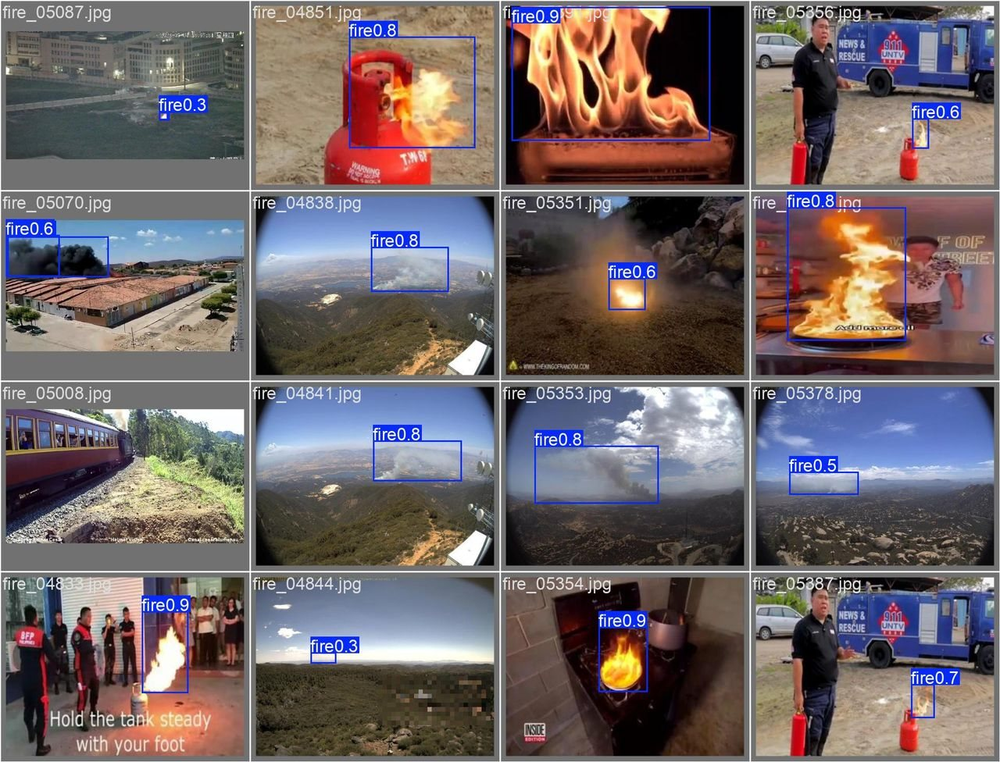

The problem
After a road accident, the time until help is called matters. Cameras already watch many roads, but someone has to notice an accident, judge how serious it is and report it. This system lets an operator upload road-scene images or video, has a model flag accidents and their severity, and notifies responders with evidence.
The model supports a human decision; it is not an emergency dispatch or a medical assessment. That shaped the design: every detection is stored with its confidence, boxes and media so a person can review it.
Data
A 3-class road-scene dataset: fire, moderate and severe. We trained YOLOv12n for 40 epochs at 640 px and evaluated it once on a held-out test set of 1,800 images containing 2,443 objects.
Approach
- Train the detector. Fine-tuned YOLOv12n (Ultralytics, PyTorch) and kept the training curves, PR curves and confusion matrix with the model bundle.
- Serve it securely. A FastAPI backend with JWT role-based authentication. Images return annotated results immediately; videos run as background jobs with live progress.
- Record every incident. SQLAlchemy and Alembic migrations on MySQL store events, confidence, boxes, media and audit information.
- Assess and alert. An AI agent (Gemini, with a local fallback) writes an assessment for each incident, and email and WhatsApp alerts send responders the annotated frames.
- Show it to operators. A React, Vite and Tailwind dashboard for incident history, alerts and analytics.
- Package and test. Docker Compose runs MySQL, the backend and the frontend together; Pytest covers the API, security, alerts and workflows.
Results
| Class | Precision | Recall | mAP@50 | mAP@50-95 |
|---|---|---|---|---|
| All classes | 92.5% | 86.8% | 89.9% | 79.0% |
| Severe | 96.9% | 99.0% | 99.4% | 93.2% |
| Moderate | 97.6% | 96.9% | 97.3% | 94.3% |
| Fire | 83.0% | 64.3% | 72.9% | 49.5% |
Scores are from the held-out test split, not the validation set used during training. mAP@50 counts a detection as correct when its box overlaps the real object by at least half.

Where it falls short. Fire is the weakest class at 64.3% recall: smoke and flames have no clear box edges and vary a lot from scene to scene. Collecting more fire images is the next improvement.
System
Limitations
- Built for academic demonstration and controlled local deployment, not live emergency dispatch.
- Video jobs are held in memory, which suits a single-process demo but not a multi-worker production setup.
- Fire recall needs more and more varied training images.